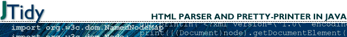
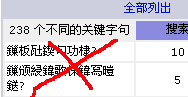

January 15, 2004
January 14, 2004
January 12, 2004
January 10, 2004
January 09, 2004
January 08, 2004
linux上限制用户进程数、cpu占用率、内存使用率等
确保/etc/pam.d/login文件中有如下一行：
session required /lib/security/pam_limits.so
然后编辑/etc/security/limits.conf文件。^_^
January 07, 2004
January 06, 2004
一堆名字
透明在《程序员》上盘点2003的java技术，文章不长却列出了一堆的名字（也许叫什么术语、名称、概念等似乎更时髦，有一些我没有看过，干脆以“名字”来笼而统之，免得让人笑话:)，让我也不由得自愧孤陋起来。现将它们列表于后，供朋友们把玩，若有人对此有些研究，不妨就之说上一言两语，也让我开眼长进一些。
深入阅读"一堆名字"January 05, 2004
January 04, 2004
用HTTPUNIT自动测试
HttpUnit虽然也带着个unit，好象应属于于功能测试那一类吧。这儿有一个例子，是测试一个login功能的。如果真要是这么测试，总感觉有点“＊＊＊＊，自找麻烦”。^_^
深入阅读"用HTTPUNIT自动测试"January 03, 2004
每日创建之自动测试
利用ant以及junit进行自动编译和测试。本例只是自动创建了你的测试程序（而非开发的应用程序），然后自动运行测试程序，并将结果发送到你的email信箱中。
深入阅读"每日创建之自动测试"January 01, 2004
December 31, 2003
December 28, 2003
December 24, 2003
December 23, 2003
December 22, 2003
December 21, 2003
December 20, 2003
December 19, 2003
December 17, 2003
关于squid的一些认识
前几天，无意中发现sohu新闻的缓存服务器是squid-2.4.7，觉得很奇怪。我一直以为它会用一些商用缓存服务器或者用硬件缓存的，没想到也是用squid.
December 09, 2003
JSP/Servlet服务器端的重定向
可以有两种方式，一是使用HttpServletReponse的sendRedirect()方法，一是使用RequestDsipatcher的forward()方法。在jsp页面中，前者即是<jsp:forward page="....jsp">，后者即是"response.sendRedirect()".
December 08, 2003
December 05, 2003
JTest来做Java代码的静态分析
自清在《CSDN开发高手》2003年11月这期，指撰文”Java静态分析利器Jtest“，推介Parasoft的Jtest。
深入阅读"JTest来做Java代码的静态分析"December 04, 2003
两个不错的站点
今天抽空看了一下refererr,看到一个站点，叫java开发网，http://www.cjsdn.com，我只看了一小会儿，就在资源那板看到了很多有用的东东。
前几天，无意中发现有个哥们把Apache2的文档给译过来了，对apache感兴趣的朋友可以去看看，http://i18n.linux.net.cn/others/ApacheManual/
.
December 02, 2003
jsp:forward的参数的乱码
如果你的应用服务器环境中，当通过GET方法和Post方法传递汉字串做参数通过convert to GB没有问题，但使用<jsp:forward>时，<jsp:param>参数值为汉字串时，通过正常的GB转换却显示乱码时，可以将此参数值先转换为ISO－8859－1的编码。
December 01, 2003
Digital Unix V4.0F上整合tomcat与apache
apache 2.0.48，Tomcat4.1.29，OS为Digital UNIX V4.0F，mod_jk1.2.5。
深入阅读"Digital Unix V4.0F上整合tomcat与apache"November 29, 2003
November 28, 2003
在digital unix上编译gcc的内存用尽问题
头儿要求我们将一个程序，移植到单位的一台Digital UNIX V4.0F上。这种OS，以前没用过，用得最熟悉的还是linux.:),一咬牙决定将gnu的一套开发环境装上。
November 25, 2003
November 22, 2003
HPUX平台上软件按装
Install：
swinstall -s $(pwd)/software-verinfo.hpux.depot software
Register the depot:
swreg -l depot $(pwd)/software-verinfo.hpux.depot
Copy the product to an existing depot:
swcopy -s $(pwd)/software-verinfo.hpux.depot software @ /your/depot
November 21, 2003
学习struts笔记（3）
没想到Struts的FAQ和How文档还是很丰富的。Struts FAQs
Howto 指南
集成开发环境指南
其它FAQs 和 Howtos
- Struts 技巧 by Ted Husted
- 利用Struts测试用例进行单元测试 by Deryl Seale
- 利用Struts Validator检查两个字段是否匹配 by Matt Raible
November 20, 2003
November 19, 2003
在Apache HTTPD中使用DSO（编译)
 Apache HTTP 服务器是一个模块化（或说积木式）的程序，管理员可以选择一些模块来增加服务器的某些功能。这些模块，可以在创建服务器程序时静态地编译到httpd服务器的二进制代码中，也可以编译成一些独立于服务器程序的Dynamic Shared Objects (DSOs)文件。DSO 文件可以在编译服务器程序时创建，也可以在以后利用Apache扩展工具apxs来单独创建。
Apache HTTP 服务器是一个模块化（或说积木式）的程序，管理员可以选择一些模块来增加服务器的某些功能。这些模块，可以在创建服务器程序时静态地编译到httpd服务器的二进制代码中，也可以编译成一些独立于服务器程序的Dynamic Shared Objects (DSOs)文件。DSO 文件可以在编译服务器程序时创建，也可以在以后利用Apache扩展工具apxs来单独创建。
这篇文档，将描述如何使用DSO 模块，以及其背后的原理。
November 18, 2003
学习struts笔记（1）
去年，跟着《程序员》学过一阵，今年再学一阵。国内对struts的研究和学习已经大有人在，更有一些人用struts做了一些实用开发，以致发布学习笔记前很是犹豫，恐见笑大方。这次学习，主要是在无意中发现，struts1.1有很多新的内容，原来知道的和现在网上常见大都是据以前的版本的写成的，因而便从struts网站开始学，不曾想学来学去，“学回家”了。：）
November 17, 2003
November 16, 2003
November 15, 2003
November 14, 2003
November 13, 2003
CLI学习笔记
如果曾经用过unix或曾经用过C编程，getopts一定不陌生，CLI跟getopts一样，是一个用来处理命令行参数或选项的Java API。
其实，相对而言对命令行的处理并不复杂，但如果采用一个能用的命令行处理接口，可能更容易让用户接受你的命令行设置。而对Java程序而言，似乎用XML文件来进行配置更为常见，这大概是java更多地被用于web应用编程有关。
如果有兴趣，就继续往下看。
November 12, 2003
如何得到unix服务器的字长和架构体系？
HP： #getconf KERNEL_BITS
AIX: #bootinfo -K
Solaris:#isainfo -kv
自由协作创造－－AKA

中国信息技术论坛（阿卡）是一个非商业民间技术机构。它汇集自发组织的信息技术人员，进行有计划有组织的信息技术方面的研究、创新、开发、交流、整理、推广工作。
November 11, 2003
November 10, 2003
I18N和L10N（1）
 无论是I18N还是L10N，从技术角度简单地说，其本质上都是字符编码的问题。
无论是I18N还是L10N，从技术角度简单地说，其本质上都是字符编码的问题。
http://www.i18nfaq.com以FAQ的形式，对I18N和L10N做一些解释，并提供了一些工具，对遇到字符编码难题的朋友，也许会有一些价值。下面是对网站一些文章的学习笔记。
November 09, 2003
Apache的Mod_rewrite学习（六）
狗尾续貂一把，把我在实际中用的apache+mod_jk+tomcat+mod_rewrite来重写含有.jsp的URL设置帖出来，其实就是简单地把前面学的用了一下，供参考。
November 08, 2003
November 04, 2003
Apache的Mod_rewrite学习（五）
今天主要列出一些例子。由于有些例子是针对特殊路径或特别情况的，列出供大家在思路上参考。因为它们就是些例子。
深入阅读"Apache的Mod_rewrite学习（五）"November 03, 2003
构建企业web邮件服务器的两套方案
2003年9月份的<网管员世界>中有两篇文章，提出两个方案：
1）solaris8 for x86/Redhat 7.2+qmail+vpopmail+mysql+igenus
2）RedHat8+Sendmail+SASL+pop3+Open WebMail.
November 02, 2003
November 01, 2003
October 31, 2003
October 30, 2003
Apache的Mod_rewrite学习（一）
 车东很早就写了一篇文章来介绍利用mod_rewrite模块来达到用静态页面形式的链接隐藏后台的动态页面。
车东很早就写了一篇文章来介绍利用mod_rewrite模块来达到用静态页面形式的链接隐藏后台的动态页面。
Apache的rewrite模块，提供了一个基于规则的重写(rewrite,也许译为重构更为合适)引擎，来实时重写发送到Apache的请求URL。因功能极其强大，被称为URL重写的“瑞士军刀”。
October 29, 2003
Jmagick学习笔记
JMagick是一个开源API，利用JNI(Java Native Interface)技术实现了对ImageMagickAPI的Java访问接口,因此也将比纯Java实现的图片操作函数在速度上要快。JMagick只实现了ImageMagicAPI的一部分功能，它的发行遵循LGPL协议。
ImageMagick请参考其官方网站或ImageMagick学习。
October 28, 2003
ImageMagick学习
ImageMagick是一套稳定的工具集和开发包，可以用来读、写和处理超过89种基本格式的图片文件，包括流行的TIFF, JPEG, GIF, PNG, PDF以及PhotoCD等格式。利用ImageMagick，你可以根据web应用程序的需要动态生成图片, 还可以对一个图片或图片序列进行改变大小、旋转、锐化、减色或增加特效，并将操作的结果以相同格式或其它格式保存。对图片的操作，可以通过命令行进行，也可以用C/C++、Perl、Java、PHP、Python或Ruby编程来完成。同时ImageMagick提供了一个高质量的2D工具包，部分地支持SVG。现在，ImageMagic的主要精力集中在性能、减少bug以及提供稳定的API和ABI上。
ImageMagick功能强大，却免费的。
October 27, 2003
October 26, 2003
October 25, 2003
NetCat的使用
HttpClient中反复提到用NetCAt进行调试，下载NetCat一看，确实如其所述的小巧而功能强大，如瑞士军刀。
NetCat是一个非常简单的Unix工具，可以读、写TCP或UDP网络连接(network connection)。它被设计成一个可靠的后端(back-end)工具，能被其它的程序程序或脚本直接地或容易地驱动。同时，它又是一个功能丰富的网络调试和开发工具，因为它可以建立你可能用到的几乎任何类型的连接，以及一些非常有意思的内建功能。NetCat，它的实际可运行的名字叫nc，应该早很就被提供，就象另一个没有公开但是标准的Unix工具。
GNU也有一个netcat项目，但此处学习的不是GNU的那个。
October 23, 2003
Digester学习笔记(一)
在windows下开发程序，用M$提供的接口处理.ini文件或管理注册表的键值是非常方便的。在java平台上开发程序，则习惯于以xml格式的文件来存放系统的配置信息，对这种文件的解析和处理，可以用sax或dom。有没有更简便的方法呢？有，就是用digester模块。
Digester是Jakarta 子项目Commons下的一个模块，支持基于规则的对任意XML文档的处理。它最初是Structs项目的一部分，后因其通用性而划归Commons.
October 22, 2003
HttpClient学习（五）
今天学习HttpClient对HTTP方法的支持。
"方法"这个词的含义太丰富了，在学习之前先交待一下。首先，每个类中有方法，与属性相对，可以视作函数，为区分称之”类方法“；HTML语言的表单(FORM)中也定义了方法(method),常见的是GET和POST，用以指明表单中输入的数据上传服务器的方法，称之为”HTML方法“；HTTP协议中也有方法，可视作http客户端向服务器端发送的指令(至于服务器端收到指令后执行不执行或如何执行那是另一码事)，称之为HTTP方法。
前几篇HttpClient笔记中，我对方法这个词没有根据上下文做细致的说明，估计难为了那些看笔记的朋友了。:)
October 21, 2003
Blog
from Mobile short messages! Is it interesting? Every blogger can beat CCTU Live report now.:) Hehe.
October 20, 2003
Jakarta Commons Logging学习笔记
说句实话，JCL(Jakarta Commons Logging)和log4j真把我搞蒙了。不都是做log的吗，怎么在jcl的源码包中，还有个log4j的包？倒底谁跟谁啊？至到看了jcl的用户指南，才明白一些。hehe.
October 19, 2003
October 18, 2003
文本信息检索与Trec评测
这是今天听的马少平教授的演讲题目。
清华大学参加了2002TREC评测，获得了两个第一，他们对检索的技术改进或者说贡献，主要表现三个方面：
October 17, 2003
October 16, 2003
apache/commons/httpclient学习笔记(一)
 虽然用telnet这样的程序都可把页面取回来，但是在与web服务器的交互中，如果涉及cookie或https或ssl等内容，一般功能相对完备的http客户端还是非常必要的。IE或NetScape等浏览器确实不错，可是如果为实现持续互动而在程序调用浏览器，我个人认为其中的工作量还是不小的，这还没考虑版权问题。最好的办法，就是能有一个开源的包，能实现http客户端的功能，供我们开发的程序调用。httpclient就是这么一个包，我相信可能有比它的实现更好的，但目前我只关注这个。：）
虽然用telnet这样的程序都可把页面取回来，但是在与web服务器的交互中，如果涉及cookie或https或ssl等内容，一般功能相对完备的http客户端还是非常必要的。IE或NetScape等浏览器确实不错，可是如果为实现持续互动而在程序调用浏览器，我个人认为其中的工作量还是不小的，这还没考虑版权问题。最好的办法，就是能有一个开源的包，能实现http客户端的功能，供我们开发的程序调用。httpclient就是这么一个包，我相信可能有比它的实现更好的，但目前我只关注这个。：）
October 15, 2003
处理正则表达式的java包:regexp
虽然apache认为JakartaORO是一个更完备的正则表达式处理包，但regexp的应用也是非常广泛，大概是因为它的简单吧。下面是regexp的学习笔记。
October 13, 2003
Linux安装完成之后如何装网卡
1、加载网站驱动模块
/sbin/modprobe ne2k-pci <----将此处的ne2k-pci换成合适的网卡驱动名，与驱动文件名相同但无.o
/sbin/ifconfig -a <----如果正常，此处可看到有eth0的信息
2、启动网卡
/sbin/route add -net 网络地址 netmask 网络掩码 eth0
/sbin/route add default gw 网关IP地址 eth0
ping IP地址 <----如果正常，此命令应有应答反馈
3、将上面的命令加入到/etc/rc.d/rc.local文件中（每步的最后一条命令是检测用的，不要加入）
October 12, 2003
rss1.0规范
RDF Site Summary (RSS) 1.0是一个轻量级多目的可扩展元数据描述和同步(syndication)格式。RSS是对XML的一种应用，遵循w3c的RDF规范，并且通过基于xml-命名空间和/或RDF的模块进行扩展。
深入阅读"rss1.0规范"October 11, 2003
October 10, 2003
October 09, 2003
October 08, 2003
RSS 2.0规范
RSS是 Really Simple Syndication的缩写（对rss2.0而言，是这三个词的缩写，对rss1.0而言则是RDF Site Summary的缩写，1.0与2.0走的是两个体系）
RSS 基于XML，所有的 RSS 必须遵循w3c网站上公布的XML 1.0 规范。
在一个RSS文档中，根元素是<rss>，带有一个必备属性version，用以指明该文档遵循的rss规范，如果rss文档遵循本规范，则version值必须是2.0。
<rss>元素只有一个子元素，包含关于频道的一些信息。频道(channel)是整个blog，项(item)指一篇文章或日志(也有称这为post)。
October 07, 2003
关于Google API的学习
 topku问起MT允许使用google金钥的功能，有什么好处。我凭着记忆胡说了一通，终于把他说晕了。
topku问起MT允许使用google金钥的功能，有什么好处。我凭着记忆胡说了一通，终于把他说晕了。
我抽空专门看了一下googleAPI的简介，下面是笔记。
October 06, 2003
基于XML-RPC的BloggerAPI学习
Luliang的mail2blog脚本，通过基于XML-RPC的BloggerAPI来实现的发布blog的功能。
BloggerAPI是一套程序接口，用以支持远程操作blog.这个规范现在的版本是1.0，是个试验版本和α版本。但是，规范的研发人员不再对BloggerAPI进一步地开发，他们正在制定一套新的、更稳定的API，新项目的名称为echo
.
关于XML-RPC
“基于internet标准的简单的跨平台分布式计算”是XML－RPC的口号。
XML-RPC是一个规范，遵循这个规范的实施，能让运行在不同的操作系统上不同的运行环境里的应用程序，通过互联网调用对方的过程（precedure）。
这种远程调用，通过HTTP进行传输，用XML进行编码。XML-RPC被设得尽可能简单，但能传输、处理及返回复杂的数据结构。
深入阅读"关于XML-RPC"October 05, 2003
什么是XJavaDoc？
XJavaDoc引擎是完全重写了的Sun的JavaDoc引擎，比后者更快，更适合于XDoclet。它扫描Java源代码，通过XJavaDoc内核的一些特殊bean从源代码中取得关于一个类的信息。这些bean除了提供如Sun JavaDoc API一样的关于类的信息外，还有一些精美的扩展功能。
XJavaDoc是从XDoclet分出来的一个子项目，也是XDoclet的核心。
October 04, 2003
Mantis学习笔记
 在错误追踪系统中，Mantis绝对是个轻量级的工具，无论安装还是配置或使用，正如它自己的目标中所宣称的。但是，对一个中小型的项目来言，功能够用。
在错误追踪系统中，Mantis绝对是个轻量级的工具，无论安装还是配置或使用，正如它自己的目标中所宣称的。但是，对一个中小型的项目来言，功能够用。
非常感谢车东的推荐，也使我进一步关注学习成本和够用就好的观点。
October 03, 2003
bugzilla学习
Bugzilla是一个bug追踪系统，用以管理bug提交、bug消除，不仅能降低同样错误的重复发生，提高开效率，而且有助于项目管理的难度。更有人打算用借助此系统，用前人的bug来教育新来的程序员，也是个不错的注意。
这使我想起一个调侃SYBASE创始人Kertzman的笑话，Kertzman年青时曾是民间歌手、电台主持和加油工，后来非常“喜欢编程”，为一个教育软件公司写了四年的程序。现在，SYBASE公司用Kertzman的代码来告诫新的程序员们，如果他们写出这样的代码，那么就会滚蛋。
October 02, 2003
JTidy学习笔记

JTidy是HTML Tidy(一个HTML语法检查器和优雅的打印编排工具）的Java移植，除了本身具有的清除HTML文件难看或错误内容的功能外，还提供了一个DOM接口，程序员可以将JTidy当作一个处理HTML文件的DOM解析器来使用。
October 01, 2003
自动监控主页，篡改短信通知
10.1长假，很多网管的一个重要任务是监控自己的主页被黑了没有。下面写了个脚本，把页面的变动用手机短信提醒一下，这样就不用定期用浏览器进行访问了。
September 30, 2003
NekoHTML学习笔记
J. Andrew Clark用Java写了一系列的工具(Java APIs)，NekoHTML是其中之一。
NekoHTML是一个简单地HTML扫描器和标签补偿器(tag balancer) ,使得程序能解析HTML文档并用标准的XML接口来访问其中的信息。这个解析器能投扫描HTML文件并“修正”许多作者（人或机器）在编写HTML文档过程中常犯的错误。NekoHTML能增补缺失的父元素、自动用结束标签关闭相应的元素，以及不匹配的内嵌元素标签。NekoHTML的开发使用了Xerces Native Interface (XNI)，后者是Xerces2的实现基础。
September 28, 2003
试用nutch
今天看站点的log，发现有几个搜索nutch的反向链接过来。其实我只是在java编码规范一文提了一下这个词，这样的结果肯定让前来的朋友倍感失望。
下面将我对nutch的一些试用公布一下，供有兴趣的朋友参阅。需要说明的是，nutch现在没有稳定的release，还在不断地根据反馈进行修改，而且目前还不支持汉语的检索。总而言之，现在这个版本对中国用户而言还不实用。我想，这也应当是一直研究并关注nutch的车东没有写笔记的原因吧。
前几天和车东在msn上谈起，觉得目前搭建网站时实现本站检索的最好的方案，是采用车东基于lucene的开源项目web lucene的软件包。而nutch似乎比较适合于建立垂直搜索引擎网站，至少目前如此，我认为。
September 27, 2003
bash编程学习笔记(1)
好象现在不流行用shell编写脚本了，这些笔记可能显得有些过时，放在这儿供自己参考吧。
同时，尽可能把一些细节列出来，供大家当参考手册来查吧。
September 26, 2003
正则表达式学习笔记
正则表达式(regular expression)描述了一种字符串匹配的模式，可以用来检查一个串是否含有某种子串、将匹配的子串做替换或者从某个串中取出符合某个条件的子串等。
列目录时， dir *.txt或ls *.txt中的*.txt就不是一个正则表达式,因为这里*与正则式的*的含义是不同的。
September 25, 2003
在java源码中为Javadoc编写文档注释(1)
在java编码规范中，提到了文档注释可被javadoc用来生成API文档。具体的写法，另有说明。下面是学习笔记，主要是摘了一些值得注意的要点。
深入阅读"在java源码中为Javadoc编写文档注释(1)"September 23, 2003
September 22, 2003
JAVA编码规范
看nutch时，有文中提到编码要符合java编码规范。到sun的网站找到规范一看，甚喜，自己的很多习惯都符合要求。
在网上一找，惊喜发现有人做了全文翻译，译文非常准确流畅。可能是规范的版本的问题，在示范代码的缩进略有差异，且文章内容有增有缺。我根据昨天下载的规范，作了补译、加注及校正，现打包在此供有心者下载。
同时，将其目录和示例代码摘录如下，供观者自我检视，以定有否必要阅读该规范。
September 20, 2003
September 19, 2003
XSL-FO学习笔记(1)
 能够生成PDF文件，总是件让我感到很神秘的事情。我以前用过的生成PDF的方法有1）将相关文件用相应的软件打开，“打印”到一个文件如ali.prn，然后手工将ali.prn改为ali.ps,再用GostView打开ali.ps,最后用其convert功能生成pdf文件，有一定比率的不成功；2）利用Acrobat Distiller；3）利用Acrobat PDFWriter。
能够生成PDF文件，总是件让我感到很神秘的事情。我以前用过的生成PDF的方法有1）将相关文件用相应的软件打开，“打印”到一个文件如ali.prn，然后手工将ali.prn改为ali.ps,再用GostView打开ali.ps,最后用其convert功能生成pdf文件，有一定比率的不成功；2）利用Acrobat Distiller；3）利用Acrobat PDFWriter。
现在，可以通过xsl-fo和apache fop编程实现，总让我感到兴奋。
September 18, 2003
邮件列表的转换移
 将一个列表比如叫ali从一个机器A移到机器B，可以先在机器B上建立一个列表叫ali,然后把A上mailman/lists/ali和mailman/archives/private/ali*移到B的相应目录下即可。
将一个列表比如叫ali从一个机器A移到机器B，可以先在机器B上建立一个列表叫ali,然后把A上mailman/lists/ali和mailman/archives/private/ali*移到B的相应目录下即可。
 用chpass，跟linux差别甚巨。从其对用户的管理来看，安全性当比linux高许多。
用chpass，跟linux差别甚巨。从其对用户的管理来看，安全性当比linux高许多。September 17, 2003
SAXAPI学习笔记（1）
SAXProject.org不知为什么连不上去，用了代理也不行，//sigh.
下面的笔记是以前看IBM的教程的记录。可能是由于版本或别的原因，教程中的例程运行后不能得到预期的结果，我做了一些修改。关于序列化和过滤器，留待以后再学习吧。
September 16, 2003
DOMAPI学习
 以前的一个DOMAPI学习笔记，最近翻出来整理了一下，并将相关例程加了log4j。学习主要是参照IBM中国DevelopWorks的教程学的，具体见文后的参考文献。
以前的一个DOMAPI学习笔记，最近翻出来整理了一下，并将相关例程加了log4j。学习主要是参照IBM中国DevelopWorks的教程学的，具体见文后的参考文献。
September 15, 2003
September 14, 2003
HttpUnit学习笔记
HttpUnit 能模拟浏览器的动作，如提交表单、JavaScript运行、基本HTTP认证、cookies建立以及自动页面重定向，通过编写代码可以处理取回来的文本、XML DOM或表单、表、链接。当与Junit等框架结合时，就能非常容易地进行一个网站的功能测试了。
深入阅读"HttpUnit学习笔记"September 13, 2003
PowerPoint的一个问题
一个“远房”师弟还有20分钟就要毕业答辨了，原来好好的PPT文件，在答辩用的笔记本上突然打不开了。具体表现就是双击或用Powerpoint打开这个PPT文件，无限期地等待，看不到任何内容，但在他自己的机器上打开没问题。
深入阅读"PowerPoint的一个问题"September 12, 2003
Junit学习笔记
JUnit是由 Erich Gamma 和 Kent Beck 编写的一个回归测试框架（regression testing framework）,供Java开发人员编写单元测试之用。
深入阅读"Junit学习笔记"September 09, 2003
安装3COM网卡驱动
在Linux下有两件事，一直让我头疼不已，一是显卡驱动，一是网卡驱动。:( 今天上午又装了一次SH572B-3Com OC 10/100 LAN PCCard网卡驱动，用时3个小时。
深入阅读"安装3COM网卡驱动"Lucene学习笔记（4）将M$Word转为HTML
后面是一些关于Luncene外围的工具，这是其中之一。
Majix利用jacob，将M$Word转换为xml，进而转换为html.
September 08, 2003
利用mhonarc转换汉语文本信件
如果信体是没指明编码信息的纯汉语文本，利用mhonarc时会将这些GB212汉字变成乱码，下面在车东方案的基础上提出一个解决办法。
September 05, 2003
September 04, 2003
Lucene学习笔记（2）
不仅仅在推广和介绍方面，车东在Lucene的汉化及web应用，也作出了极大的极大的贡献。他将自己的汉化和web应用两方面的成果，放在sourceforge上成了开源的项目。下面主要是对这个项目的学习笔记。
深入阅读"Lucene学习笔记（2）"September 03, 2003
September 02, 2003
Lucene学习笔记（1）
Lucene是一套全文检索的API，对其介绍的文章和应用的案例都多，可参考lucene及本文的参考文献。
此次学习，以实用为主，一是简单应用，二是Web应用，三是汉化，四相关应用（Lucene主页上在SandBox中）。
August 31, 2003
August 30, 2003
PageRank普遍猛增
前天的学习笔记中，说Isaac和chedong的主页的google网页级别是5和4，今天再看就已经是6和5了，而我自己的也从0猛跳到4了，很意外。
深入阅读"PageRank普遍猛增"August 29, 2003
August 28, 2003

{kind=link}
{kind=link}
August 27, 2003
Log4J学习笔记（3）
我这儿有两个程序，一个是普通的java程序，实现了一个“九九表”；另一个是servlet。我这儿用的tomcat是4.1.12，J2SE是1.3.1，log4j的版本是1.2.8.
深入阅读"Log4J学习笔记（3）"August 26, 2003
August 25, 2003
Log4J学习笔记（1）
说实话，除了log4j的功能外，我更喜欢它的logo.
下面的这篇笔记，主要是"borrow from"Log4J的随机文档"Short introduction to log4j"，由Ceki Gülcü 写于March 2002，其它参考文档见文后。
{kind=link}
利用apache-commons-fileupload写jsp上传文件
 需要下载fileupload和beanutils两个包，代码如下。
需要下载fileupload和beanutils两个包，代码如下。
August 24, 2003
August 22, 2003
用sendmail发送带附件的email
用perl语言写了一个脚本，其中调用了sendmail和uuencode两个外部程序。
原程序中，有几处错误，我都一一修订过来。
改掉Stephen's Referrer的UTF-8乱码
 用前文不用perl5.8解析google检索的UTF8编码提到方法，但好象要一个站点一个站的判断了。因为这里没有编码信息啊。
用前文不用perl5.8解析google检索的UTF8编码提到方法，但好象要一个站点一个站的判断了。因为这里没有编码信息啊。
August 21, 2003
用perl5.6为AWStats解析google检索的UTF8编码
 车东已经给出了在perl5.8下的解决方案，并提供了相应的补丁,以解决awstats进行检索词时，因google检索串用UTF编码而致在gb2312的网页检索词显示为乱码的问题。
由于升级perl从5.6到5.8可不是件容易的事，所以最好的办法还是想法在perl5.6的环境中解决这个问题。Awstats本身支持汉语，此也算对它的进一步汉化吧。
 现提出的解决办法，使用icov和Text-Iconv-1.2来将UTF8变为GB2312。 下面是具体步骤：
现提出的解决办法，使用icov和Text-Iconv-1.2来将UTF8变为GB2312。 下面是具体步骤：
August 20, 2003
主页设计技术（3）：主页可用性的113条原则
Jakob博士分26类，列出了113条原则。下面，类的倒序一一摘录（每类中顺序不变）。
在录入的过程中，我渐渐发现只要找到每条原则所要达到的目的或要解决的问题，这样就可以据具体情况灵活的加以解决。
August 19, 2003
August 17, 2003
主页设计技术（1）：推荐的主页设计
在同事的帮助下，办了个借书卡，并在他的带领下，借回了Jakob的Homepage Usability: 50 Websites Deconstructed的汉译本《专业主页设计技术－－50佳站点赏析》。
随着阅读，会逐渐把一些笔记放上来。今天是第一部分，是作者基于主页设计的一些统计资料，提出的主页设计方案。
August 16, 2003
August 15, 2003
让Refer 2.03 在低于4.1+的php环境运行
Refer 2.03可以把反向连接显示出来，供网主参考，可是要求运行在php 4.1+上，下面通过hack源程序，使其运行在php 4.0.6-7上。
深入阅读"让Refer 2.03 在低于4.1+的php环境运行"August 13, 2003
August 12, 2003
August 11, 2003
August 07, 2003
关于usability的定义
usabilityfirst给出的定义是the characteristic of being easy to use, usually applied to software, but relevant to almost any human artifact.
深入阅读"关于usability的定义"August 06, 2003
首页可用性设计的10条指导方针（译）
Jakob Nielsen博士在2002年5月12日撰文Top Ten Guidelines for Homepage Usability，今摘译每条指导方针。
深入阅读"首页可用性设计的10条指导方针（译）"August 05, 2003
August 04, 2003
August 02, 2003
August 01, 2003
TWIKI手记（一）：安装
TWIKI据说是功能最强大的wiki，它的主页在大陆不能直接访问，自己找个代理吧。：）
因为功能多，所以复杂的很，加上用google搜twiki受限，难以找到网友们的安装和使用记录，只好自己硬着头皮看英文文档了。
下面是我的一些安装使用手记，希望能为后来者提供一些帮助吧。
July 31, 2003
July 30, 2003
July 29, 2003
July 28, 2003
July 27, 2003
July 25, 2003
把影集显示修改了一下
显示图片时，把图片的标题当作TITLE的一部分显示，据说google不喜欢TITLE都一样，这样做可以给它以亲切感。：)
同时，在每个页面上做了返回主页的连接。
July 24, 2003
July 23, 2003
July 22, 2003
July 21, 2003
July 19, 2003
Apache项目知多少。
Apache.org的项目和子项目，林林总总，下面把我知道的，列一下，供参考吧。
说明一下，已经Hibernated的项目，不再列入以下，而且子项目属于多个项目的只列其一（如soap，列入ws而不再列入xml）。
深入阅读"Apache项目知多少。"July 17, 2003
w3cschool,学习WEB开发的好地方！
W3CSchools据它自己说是网上最大的网站开发的网站，每天有1百万个新页面。不过，常见的Web技术如HTML、XML、CSS等，这儿都有，更好的是它的例程非常丰富，且鼓励你TRY！
网站设计中新出现的10种毛病
这是Jakob Nielsen博士在99年写文章,我把它的小标题译了一下，供参考吧。
他还写了好多关于Usability的文章，以后有机会再译吧。
深入阅读"网站设计中新出现的10种毛病"July 16, 2003
打造更具亲和力的网站
将“Dive Into Accessibility”译成“打造更具亲和力的网站”，非常到位，尤其是“亲和力”译“Accessibility”非常贴切。
这是我所见到的第一篇免费的关于网站亲和力的书
，读来很收获。本书获得2003 Weblog Awards的Best articl or essay about weblog.
July 14, 2003
OSW:14.WebMail的搭建
不是原发的文章，连起名都困难。就拿本文的题目来说吧，用“WebMail的研究”似乎很顺口，可是自己只是搜集了一下内容，试了一下，没有什么研究，以此为题明显不妥。用个搭建吧，描述地还准确一些。
以前见过一个软件，叫"@message"，很多门户网站提供免费email，都是用此软件的，可是此软件却不是免费的。
深入阅读"OSW:14.WebMail的搭建"July 13, 2003
July 10, 2003
July 09, 2003
OSW:9.Log4J
我今天的理解是，一个功能包，主要用来记录程序的Debug或进度信息。通常，这些信息都是不很规范地输出到Console或某个log文件中。
今天的理解对不对，只能去试了。
深入阅读"OSW:9.Log4J"OSW:7.认证中心
海龙讲PKI时，以算法和体系讲得很细，可是没讲怎么搭建。在一次讲座后去问另一个人，好象也没问出个结果。郝大说他自己搭了个认证服务器，很得意，又见他在研究应用密码学，便猜这东东一定不会容易。想向他打听吧，又怕需要的背景知识太多，只好作罢。
有文说用OpenSSL可以做，过几天试试去。根据文章指点，step by step,：）
OSW:前言
Open Source World(OSW)是我刚订不久的期刊，里面有很多文章，描述的开源软件对我来说，非常新鲜，也非常有意思，便照着文章的说明，step by step试了过来。
深入阅读"OSW:前言"July 08, 2003
July 03, 2003
June 23, 2003
个性化服务的几篇文章。
前几天去看了中科院的“MyLibrary”，便注意了一下关于网上信息个性化服务的问题。2003年6月16日，＜计算机世界＞第22期上正好有一个技术专题，就是讲个性化服务的。
这个专题的所有文章，都在网上可搜到，现附在后面，以备忘。
深入阅读"个性化服务的几篇文章。"